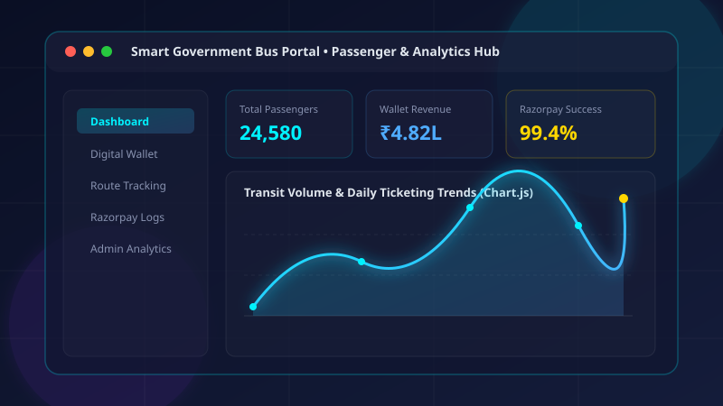
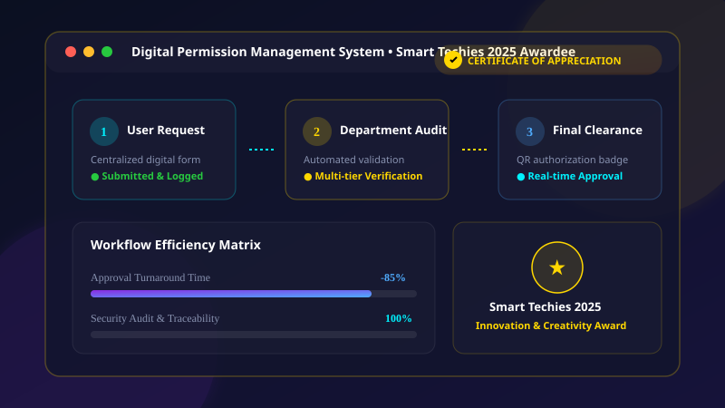
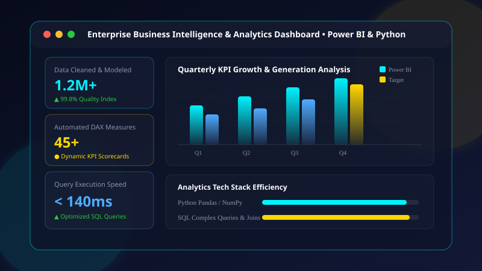

MCA graduate and aspiring Data Analyst with hands-on exposure to SQL, Power BI, Python, Excel, data visualization and dashboard development. Strong in analytical thinking, problem solving and turning data into clear, actionable business insights.
Transforming raw data into strategic solutions with analytical rigor
I am an MCA Graduate and aspiring Data Analyst with hands-on exposure to SQL, Power BI, Python, Excel, data visualization and dashboard development.
With academic roots in B.Sc. Chemistry and advanced computer applications in MCA, I bring a unique dual lens: scientific precision combined with modern computational data engineering. I enjoy uncovering underlying trends, designing automated dashboards, and presenting actionable insights for high-impact decision making.
My professional journey spans practical experience in Solar O&M monitoring at LONGi Solar, an intensive Data Analytics Internship at NoviTech R&D, and web application development at Wiltech Solutions.
Arul Anandar College (Autonomous), Madurai
CGPA: 8.13St. Joseph’s College (Autonomous), Tiruchirappalli
CGPA: 8.00MCA CGPA
Academic DistinctionInternships Completed
Data Analytics & Web DevKey Projects Delivered
Analytics Dashboards & PortalsCertifications & Honors
Simplilearn & AICTE ATALHands-on industry exposure in data operations, analytical problem solving, and software systems
Tools, languages, and analytics technologies I leverage to extract actionable insights
Business intelligence, data modeling, DAX measures & automated executive dashboards.
Relational & NoSQL architectures, complex SQL joins, indexing, and data pipelines.
Data processing scripting, web integrations, API endpoints, and modern interfaces.
Collaborative version control, modern development environments, and operational tools.
Key personal attributes that drive successful cross-functional team delivery.
Production-grade systems and business intelligence platforms crafted for real users

Comprehensive digital ticketing and transit platform designed to replace paper passes with a secure digital passenger wallet system, live boarding management, and an Admin Analytics Dashboard.

Centralized academic permission workflow replacing tedious paperwork with a transparent multi-tier authorization hierarchy. Honored with a Certificate of Appreciation at Smart Techies 2025.

End-to-end data pipelines and business intelligence suite built to extract, clean, and visualize operational data. Features dynamic DAX calculations, automated KPI scorecards, and interactive drill-down reports.
Accredited certifications from leading institutions in data analysis, computing, and professional practice
Data exploration, statistical modeling, hypothesis testing, and analytics workflows.
Data modeling, Power Query transformations, DAX formulas, and interactive report publishing.
Relational schema design, complex joins, subqueries, aggregations, and performance tuning.
Data structures, automation scripts, data manipulation with analytical libraries.
Advanced formulas, VLOOKUP/XLOOKUP, INDEX-MATCH, pivot tables, and data validation.
Building automated executive visual KPI dashboards with slicers, dynamic charts, and macro automation.
Specialized faculty and researcher development program focusing on intelligent computing algorithms, sensor networks, IoT analytics, and AI frameworks.
Practical enterprise exposure to data preprocessing, exploratory analytics, and problem solving.
Web applications architecture, database integration, UI component development.
Have an opportunity, data analytics requirement, or want to collaborate? I'd love to hear from you!
Dindigul, Tamil Nadu, India
Open to onsite, hybrid & remote roles
Fill out the form below and I will get back to you shortly.